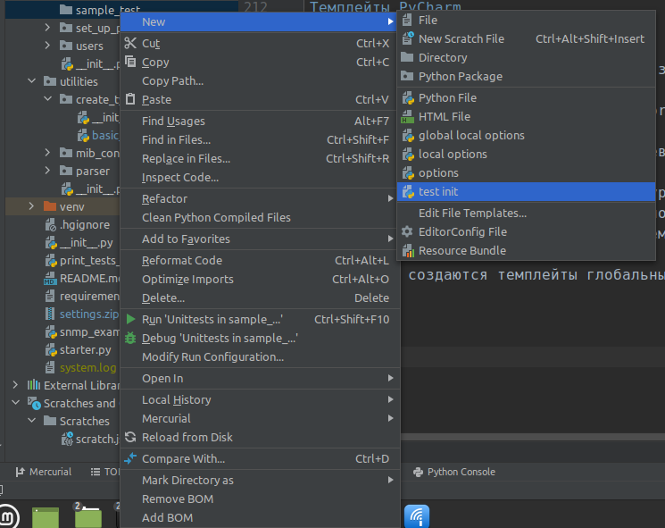
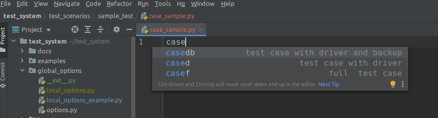

Возможности системы¶
- Содержание:
Ридер конфигурационных файлов¶
В тестовой системе используется следующая иерархия параметров (опций) тест-кейсов:
Глобальные опции test_system.global_options.options.py
Глобальные локальные опции test_system.global_options.local_options.py
Опции тест-кейса test_system.test_scenarios.<путь_до_директории_тест_кейса>.options.py
Локальные опции тест-кейса test_system.test_scenarios.<путь_до_директории_тест_кейса>.local_options.py
Note
Локальные опции, как глобальные так и тест-кейсов, не отслеживаются системой контроля версий, а служат для переопределения параметров тест-кейсов при локальном использовании
Warning
Не следует переопределять параметры глобальных опций. Вместо этого необходимо отредактировать файл глобальных локальных опций
Для установки параметров соединения с вашей НМС необходимо создать файл глобальных локальных опций:
# test_system.global_options.local_options.py
from src.custom_logger import *
from src.options_providers.options_provider import CHROME_CONNECT, API_CONNECT, CONNECTION
_host = 'http://some_nms_address:port_number/' # IP адрес и порт вашей НМС
system = {
CHROME_CONNECT: {
'address': _host,
'no_gui': True,
},
API_CONNECT: {
'address': _host,
},
# тип драйвера НМС (возможные варианты CHROME_CONNECT, API_CONNECT)
CONNECTION: API_CONNECT, # будет использован API драйвер
'default_config': 'default_config.txt', # default NMS backup file
# Установка уровня логирования (возможные варианты DEBUG, INFO, WARNING, ERROR, CRITICAL)
LOGGING: DEBUG # будет установлен уровень логирования DEBUG
}
В файлах опций может быть задано два словаря с именами system и options. Словарь system используется для установки параметров соединения, уровня логирования и т.п. Словарь options используется для определения параметров, используемых в тест-кейсах, например, параметры контроллера.
Для загрузки опций применяется ридер конфигурационных файлов, с помощью которого осуществляется переопределение опций начиная с глобальных и заканчивая локальными опциями тест-кейса. Опции переопределяются в следующем порядке:
Глобальные опции -> Глобальные локальные опции -> Опции тест-кейса -> Локальные опции тест-кейса
Пример использования ридера конфигурационных файлов:
from src.custom_test_case import CustomTestCase
from src.options_providers.options_provider import OptionsProvider
options_path = "test_scenarios/путь_до_директории_тест_кейса"
class SomeNameTestCase(CustomTestCase):
options = {}
@classmethod
def set_up_class(cls):
cls.options = OptionsProvider.get_options(options_path)
# после этого загруженные опции доступны в обычных методах текущего модуля как `self.options`
Менеджер бэкапов¶
В тестовой системе используется менеджер бэкапов для создания бэкапа текущей конфигурации НМС и загрузки конфигурации НМС из бэкапа. Менеджер бэкапов находится в test_system.src.backup_manager. Бэкапы хранятся в test_system.nms_backups. Пример загрузки бэкапа:
from src.custom_test_case import CustomTestCase
from src.backup_manager.backup_manager import BackupManager
class SomeNameTestCase(CustomTestCase):
@classmethod
def set_up_class(cls):
cls.backup = BackupManager()
cls.backup.apply_backup('default_config.txt')
Пример сохранения текущий конфигурации НМС:
from src.custom_test_case import CustomTestCase
from src.backup_manager.backup_manager import BackupManager
class SomeNameTestCase(CustomTestCase):
@classmethod
def set_up_class(cls):
cls.backup = BackupManager()
cls.backup.create_backup('nms_config_name.txt')
# В обычных методах данного класса драйвер доступен как `self.backup`
Драйвер взаимодействия с НМС¶
В тестовой системе используется концепция драйвера взаимодействия с НМС. Драйвер необходим при использовании в тест-кейсе обёрток сущностей НМС. В текущей реализации используются следующие два драйвера: API и CHROME. Тип драйвера как правило определяется в глобальных опциях в словаре system по ключу CONNECTION, параметры драйверов определяются там же по ключам API_CONNECT и CHROME_CONNECT. Также возможно переопределение драйвера для отдельного тест-кейса в файле опций этого тест-кейса.
Important
Экземпляр драйвера используется как первый аргумент при инициализации обёрток сущностей НМС.
Описание методов драйверов приводится в test_system.src.drivers.http package
Пример инициализации драйвера с параметрами из глобальных опций:
from src.custom_test_case import CustomTestCase
from src.drivers.drivers_provider import DriversProvider
from src.constants import NEW_OBJECT_ID
class SomeNameTestCase(CustomTestCase):
@classmethod
def set_up_class(cls):
# Инициализация драйвера всегда выглядит так
cls.driver = DriversProvider.get_driver_instance(
OptionsProvider.get_connection()
)
# Далее инициализированный драйвер можно использовать для работы с сущностями НМС, например для создания новой сети
cls.network = Network(cls.driver, 0, NEW_OBJECT_ID, params={'name': 'default_network'})
cls.network.save()
# В обычных методах данного класса драйвер доступен как `self.driver`
Если драйвер переопределён в опциях конкретного тест-кейса, его инициализация будет выглядеть следующим образом:
from src.custom_test_case import CustomTestCase
from src.drivers.drivers_provider import DriversProvider
from src.constants import NEW_OBJECT_ID
class SomeNameTestCase(CustomTestCase):
@classmethod
def set_up_class(cls):
# Инициализация драйвера всегда выглядит так
cls.driver = DriversProvider.get_driver_instance(
OptionsProvider.get_connection('test_scenarios/путь_до_директории_тест_кейса')
)
# Далее инициализированный драйвер можно использовать для работы с сущностями НМС, например для создания новой сети
cls.network = Network(cls.driver, 0, NEW_OBJECT_ID, params={'name': 'default_network'})
cls.network.save()
# В обычных методах данного класса драйвер доступен как `self.driver`
Драйвер взаимодействия с UHP¶
В тестовой системе используется драйвер взаимодействия с UHP для тест-кейсов, в которых необходимо получать данные непосредственно с модемов. Драйвер взаимодействия с UHP находится в test_system.src.drivers.uhp package
Пример использования драйвера UHP:
from src.custom_test_case import CustomTestCase
from src.drivers.uhp.uhp_requests_driver import UhpRequestsDriver
class SomeNameTestCase(CustomTestCase):
@classmethod
def set_up_class(cls):
cls.uhp_driver = UhpRequestsDriver(router_address='ip_адрес_роутера')
# В обычных методах данного класса драйвер доступен как `self.uhp_driver`
def test_modulator(self):
# В переменной `uhp_data` будет записан словарь с ключами и значениями формы `modulator` профиля 1 UHP
uhp_data = self.uhp_driver.get_modulator_form()
# Проверка соответствия значения TX level в UHP величине 20.3
assertEqual('20.3', uhp_data.get('tx_level'))
НМС сущности¶
В тестовой системе используются обёртки сущностей НМС. Для их использования необходимо предварительно инициализировать драйвер.
Драйвер всегда передаётся первым аргументом.
Вторым аргументом передаётся ID родительского объекта, например, для телепорта это будет ID сети.
Третьим аргументом передаётся ID самого объекта, если ID равен -1 будет создан новый объект.
Четвёртый аргумент необязателен - это словарь с параметрами объекта.
Описание методов обёрток сущностей НМС приводится в соответствующем разделе test_system.src.nms_entities.basic_entities package:
Пример создания простой конфигурации НМС:
# test_system/utilities/create_typical_nms_config/basic_nms_config.py
from src.constants import NEW_OBJECT_ID
from src.drivers.drivers_provider import DriversProvider
from src.nms_entities.basic_entities.alert import Alert
from src.nms_entities.basic_entities.controller import Controller
from src.nms_entities.basic_entities.network import Network
from src.nms_entities.basic_entities.profile import Profile
from src.nms_entities.basic_entities.shaper import Shaper
from src.nms_entities.basic_entities.station import Station
from src.nms_entities.basic_entities.teleport import Teleport
from src.nms_entities.basic_entities.user_group import UserGroup
from src.nms_entities.basic_entities.vno import Vno
from src.options_providers.options_provider import OptionsProvider, API_CONNECT
def get_drivers():
connection_options = OptionsProvider.get_connection('global_options', API_CONNECT)
api = DriversProvider.get_driver_instance(connection_options)
return api
def create_basic_nms_config():
api = get_drivers()
alert = Alert(api, 0, NEW_OBJECT_ID, {'name': 'test_alert'})
alert.save()
network = Network(api, 0, NEW_OBJECT_ID, {'name': 'default_network'})
network.save()
profile = Profile(api, network.get_id(), NEW_OBJECT_ID, {'name': 'test_profile'})
profile.save()
shaper = Shaper(api, network.get_id(), NEW_OBJECT_ID, {'name': 'test_shaper'})
shaper.save()
teleport = Teleport(api, network.get_id(), NEW_OBJECT_ID, {'name': 'test_teleport'})
teleport.save()
controller = Controller(api, network.get_id(), NEW_OBJECT_ID,
{
'name': 'test_mf_hub',
'mode': '1',
'teleport': F"teleport:{teleport.get_id()}"
}
)
controller.save()
vno = Vno(api, network.get_id(), NEW_OBJECT_ID, {'name': 'test_vno'})
vno.save()
station = Station(api, vno.get_id(), NEW_OBJECT_ID,
{
'name': 'test_station',
'serial': '12345'
}
)
station.save()
user_group = UserGroup(api, 0, NEW_OBJECT_ID, {'name': 'operators'})
user_group.save()
Темплейты PyCharm¶
При использовании IDE PyCharm возможно загрузить настройки темплейтов тестовой системы. Для импортирования настроек:
File -> Manage IDE settings -> Import Settings…
Выбрать файл settings.zip в корневой директории тестовой системы, дважды подтвердить выбор и согласится на перезапуск IDE.
После этого возможно создавать готовые __init__.py файлы тест-кейсов и шаблоны опций следующим способом: вызвать кликом правой кнопкой мыши на новой директории тест-кейса контекстное меню в котором выбрать New -> test init согласиться на отслеживание файла системой контроля версий.
{kind=link}
Аналогично создаются темплейты глобальных локальных опций (global local options), опций тест-кейсов (options), локальные опции тест-кейсов (local options)
Также существует возможность вызова темплейтов тест-кейсов. Для этого после создания файла case_название_тест_кейса.py набрать в редакторе case и выбрать один из трёх предложенных вариантов:
{kind=link}